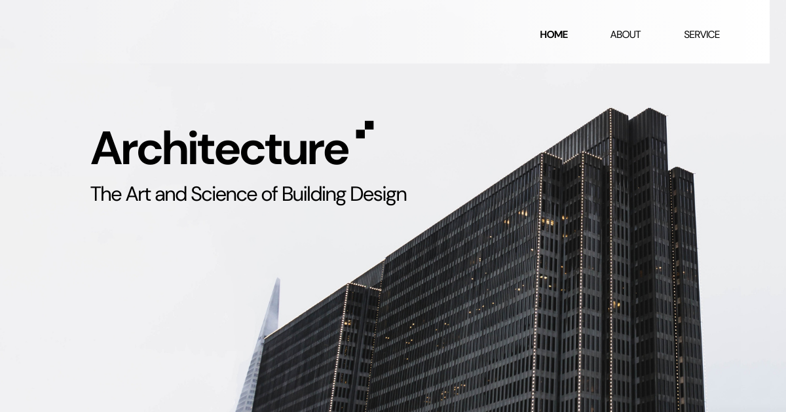

Komunikasi Desain Digital 2D
Komunikasi Desain Digital 2D: Membangun Kemampuan Visualisasi dan Dokumentasi Arsitektur Modern
Di era transformasi digital, proses perancangan arsitektur tidak lagi dilakukan secara manual semata, melainkan didukung oleh berbagai perangkat lunak yang mampu menghasilkan gambar teknik dan visualisasi secara cepat, akurat, serta profesional. Kemampuan menyampaikan ide desain melalui media digital menjadi kompetensi dasar yang harus dimiliki oleh setiap calon arsitek, karena seluruh proses perencanaan, koordinasi proyek, hingga pelaksanaan konstruksi bergantung pada kualitas komunikasi visual yang dihasilkan.
Dalam program studi Arsitektur, mata kuliah Komunikasi Desain Digital 2D membekali mahasiswa dengan keterampilan menggunakan perangkat lunak Computer-Aided Design (CAD) dan aplikasi grafis digital untuk menghasilkan gambar arsitektur dua dimensi yang sesuai dengan standar profesional. Mahasiswa mempelajari teknik menggambar denah, tampak, potongan, detail konstruksi, diagram, serta penyajian gambar kerja yang komunikatif sehingga mampu menyampaikan konsep desain secara jelas kepada klien, konsultan, kontraktor, maupun pihak terkait lainnya.
Apa Itu Komunikasi Desain Digital 2D?
Komunikasi Desain Digital 2D merupakan mata kuliah yang mempelajari teknik penyusunan, pengolahan, dan penyajian gambar arsitektur berbasis komputer dalam format dua dimensi. Mata kuliah ini mengajarkan bagaimana mengubah konsep desain menjadi dokumen visual yang akurat, terukur, mudah dipahami, serta memenuhi standar dokumentasi dalam dunia arsitektur dan konstruksi.
Mahasiswa mempelajari penggunaan berbagai perangkat lunak desain digital untuk membuat gambar teknik, ilustrasi konsep, diagram analisis, layout presentasi, hingga dokumentasi proyek. Selain menguasai aspek teknis penggambaran, mahasiswa juga dilatih memahami prinsip komunikasi visual sehingga setiap gambar mampu menyampaikan informasi secara efektif dan profesional.
Ruang Lingkup Komunikasi Desain Digital 2D
Mata kuliah ini mencakup berbagai teknik dasar dan lanjutan dalam penyusunan gambar arsitektur digital dua dimensi.
- Pengenalan konsep komunikasi visual dalam arsitektur.
- Dasar-dasar Computer-Aided Design (CAD).
- Pembuatan denah, tampak, dan potongan bangunan.
- Penggambaran detail arsitektur dan detail konstruksi.
- Penggunaan sistem layer, line type, hatch, dan anotasi.
- Penerapan dimensi, skala, simbol, dan standar gambar teknik.
- Pembuatan diagram konsep, zoning, sirkulasi, dan analisis tapak.
- Layout gambar kerja dan penyusunan lembar presentasi.
- Pengelolaan file digital serta standar dokumentasi proyek.
- Integrasi gambar 2D dengan proses Building Information Modeling (BIM).
- Persiapan dokumen digital untuk presentasi, percetakan, maupun koordinasi proyek.
Ruang lingkup tersebut memberikan pemahaman kepada mahasiswa bahwa gambar arsitektur merupakan media komunikasi utama yang harus mampu menyampaikan informasi teknis secara akurat, efisien, dan mudah dipahami oleh seluruh pihak yang terlibat dalam proses pembangunan.
Peran dalam Studi Arsitektur
Dalam program studi Arsitektur, mata kuliah Komunikasi Desain Digital 2D berperan sebagai fondasi keterampilan digital yang mendukung hampir seluruh proses perancangan arsitektur. Mahasiswa belajar menerjemahkan ide konseptual menjadi gambar teknik yang presisi sehingga mampu digunakan sebagai media komunikasi dalam studio desain, koordinasi multidisiplin, maupun pelaksanaan konstruksi.
Pembelajaran ini menjadi dasar bagi berbagai mata kuliah lanjutan seperti Studio Perancangan Arsitektur, Teknologi Bangunan, Building Information Modeling (BIM), Komunikasi Desain Digital 3D, Visualisasi Arsitektur, hingga dokumentasi proyek profesional. Dengan kemampuan tersebut, mahasiswa dapat menghasilkan gambar yang sesuai dengan standar industri arsitektur dan konstruksi.
Manfaat dalam Masyarakat, Riset, dan Dunia Kerja
Penguasaan mata kuliah Komunikasi Desain Digital 2D memberikan manfaat yang luas karena meningkatkan kemampuan mahasiswa dalam menghasilkan dokumentasi arsitektur yang profesional dan mudah dipahami.
- Menghasilkan gambar kerja yang akurat sesuai standar industri.
- Meningkatkan efektivitas komunikasi antara arsitek, klien, kontraktor, dan konsultan.
- Mengurangi kesalahan interpretasi selama proses pembangunan.
- Mendukung penyusunan dokumen perencanaan dan perizinan bangunan.
- Meningkatkan efisiensi revisi desain melalui penggunaan perangkat lunak digital.
- Menjadi dasar penelitian mengenai digitalisasi proses desain dan dokumentasi arsitektur.
- Mendukung kolaborasi lintas disiplin dalam proyek konstruksi berbasis teknologi.
Lulusan yang menguasai mata kuliah ini memiliki kompetensi yang dibutuhkan sebagai arsitek, drafter CAD, architectural designer, BIM modeler, technical illustrator, konsultan perencanaan, desainer interior, visual communication specialist, maupun tenaga profesional yang bertanggung jawab dalam penyusunan gambar kerja dan dokumentasi proyek arsitektur.
Tren Terkini dalam Komunikasi Desain Digital 2D
Perkembangan teknologi digital terus mengubah cara arsitek menghasilkan, mengelola, dan mendistribusikan gambar teknik sehingga komunikasi desain menjadi semakin cepat, kolaboratif, dan terintegrasi.
- Integrasi Computer-Aided Design (CAD) dengan Building Information Modeling (BIM).
- Kolaborasi desain berbasis cloud untuk koordinasi proyek secara real-time.
- Penerapan Artificial Intelligence (AI) dalam otomatisasi dokumentasi gambar.
- Pemanfaatan template digital dan standar gambar berbasis BIM.
- Penggunaan perangkat digital pen tablet untuk proses sketsa dan anotasi.
- Integrasi gambar 2D dengan visualisasi 3D, virtual reality (VR), dan augmented reality (AR).
- Digitalisasi proses review, revisi, dan persetujuan gambar secara daring.
- Peningkatan interoperabilitas data melalui format file terbuka untuk kolaborasi multidisiplin.
- Penerapan workflow paperless dalam pengelolaan dokumen arsitektur dan konstruksi.
Penutup
Komunikasi Desain Digital 2D merupakan mata kuliah yang memberikan dasar penting dalam menyusun dan menyajikan gambar arsitektur berbasis komputer secara profesional. Melalui pembelajaran mengenai teknik penggambaran digital, standar dokumentasi, komunikasi visual, serta penggunaan perangkat lunak desain, mahasiswa mampu menghasilkan gambar teknik yang akurat, informatif, dan mudah dipahami oleh seluruh pemangku kepentingan dalam proyek pembangunan.
Dalam program studi Arsitektur, mata kuliah ini menjadi fondasi utama bagi berbagai mata kuliah desain dan praktik profesional. Penguasaan komunikasi desain digital tidak hanya meningkatkan kualitas proses perancangan, tetapi juga mempersiapkan lulusan agar mampu beradaptasi dengan perkembangan teknologi industri arsitektur yang semakin mengandalkan sistem digital, kolaborasi daring, serta integrasi data dalam setiap tahapan proyek.
Mahasiswa Sabi
©Repository Muhammad Surya Putra Fadillah